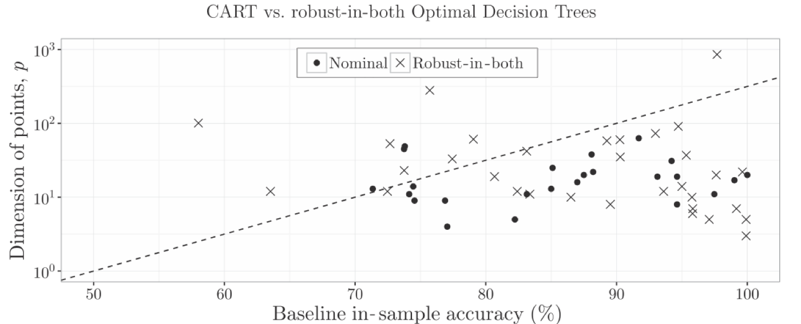

- しきい値のまわりに余白 ρ特徴量の摂動に対するロバスト版の最適決定木は、各分岐で左に進む点はしきい値より ρ 以上小さく、右に進む点は ρ 以上大きいことを求める。ノルムの選び方によらず混合整数線形最適化のままになる（定理 3）。
- 最大 Γ 個のラベルの反転ラベルの誤りに対するロバスト版では、Γ 個までのラベルが反転した最悪の場合を考える。決定木では各葉の多数派に Γ に応じた差を求めることになり、Γ を大きくすると葉の純度が高まる（定理 6）。
- +1.3%（対 CART）判定ルール \(\log_{10}p \ge 0.05a-2.5\) を満たすデータで、特徴量とラベルの両方に頑健な最適決定木が CART を上回った精度の平均（14 データ中 9 勝 3 敗 2 分）。通常の最適決定木と比べても +1.4% だった（論文 Table 6）。
学習データの特徴量にもラベルにも誤りが入りうるので、それを明示的に表して分類器を学習したい
特徴量の誤差の例として論文は Wisconsin Diagnostic Breast Cancer のデータを挙げる。細胞核の半径や質感などの特徴量は画像から計算されるので、画像のノイズや認識プログラムの精度の影響を受ける。欠損値を補完したデータにも不確かさが入る。ラベルの誤りの例は避妊法の選択を女性に尋ねた Contraceptive Method Choice のデータである。調査なので、一部の回答者が正直に答えていないおそれがある。がんの臨床試験で寛解したかを判定するラベルも主観的で、腫瘍の測定の精度に左右される。
こうした不確かさへの対策としては正則化がよく使われる。この論文はロバスト最適化を使い、データの不確かさを不確実性集合として直接表して分類器を学習する。SVM とロジスティック回帰の特徴量の摂動に対するロバスト版はすでに知られていた。一方、ラベルの誤りを扱う既存の方法は主にヒューリスティックで、決定木をロバスト最適化の問題として定式化した研究はなかったと論文は述べている。ロバスト最適化を決定木に使うには木の学習を 1 つの最適化問題として書く必要があり、論文は Bertsimas と Dunn（2017）の OCT の混合整数最適化の定式化を出発点にする。なお、推定量の性質を調べるロバスト統計とは別の分野だと論文は断っている。
特徴量は各点を半径 ρ の範囲で動かし、ラベルは最大 Γ 個まで反転させた最悪の場合に備える
ロバスト最適化では、不確かなパラメータがとりうる値の集合を決め、その集合のなかで最も不利な値に対して最適な解を求める。特徴量については、各点 \(\mathbf{x}_i\) に加法的な摂動 \(\Delta\mathbf{x}_i\) が入るとし、その大きさを点ごとに \(\ell_q\) ノルムで抑える。ラベルについては、反転したかを表す二値の変数 \(\Delta y_i\) を置き、反転する点の数を \(\Gamma\) 以下に抑える。
本当のラベルは \(y_i(1-2\Delta y_i)\) と書ける。\(\mathcal U_x\) は点ごとの集合の直積なので扱いやすいが、\(\mathcal U_y\) はそのように分解できない。\(\rho\) と \(\Gamma\) は検証データで選ぶ。\(\rho=\Gamma=0\) なら通常の問題に戻るので、通常の分類器も候補に含まれ、ロバスト版が選ばれるのは検証の精度が上がるときだけになる。両方に頑健な分類器（robust-in-both）の検証では、通常版・特徴量版・ラベル版も候補に入る。
SVM とロジスティック回帰では、特徴量の摂動は双対ノルムの項になり、ラベルの反転は問題の種類を変える
特徴量の摂動に対するロバスト版は、内側の最悪化が双対ノルムの問題 \(\max_{\|\Delta\mathbf{x}\|_q\le\rho}\mathbf{a}^\top\Delta\mathbf{x}=\rho\|\mathbf{a}\|_{q^*}\) になることから導ける。SVM では制約が \(y_i(\mathbf{w}^\top\mathbf{x}_i-b)-\rho\|\mathbf{w}\|_{q^*}\ge 1-\xi_i\) になり、Xu ら（2009）の結果と一致する。正則化つきの SVM 自体がある不確実性集合でのロバスト版と等価なので、ロバスト性を二重に数えないよう、論文は正則化項のないヒンジ損失を通常の SVM として扱う。ロジスティック回帰では \(\rho\|\boldsymbol\beta\|_{q^*}\) がロジットの中に入る。正則化項が尤度全体への線形の罰則であるのに対し、こちらは対数オッズへの罰則で、1 次のテイラー展開で両者の関係を示している。
ラベルの反転に対するロバスト版では、問題の種類が変わる。SVM は二値変数が入って混合整数最適化になり、ロジスティック回帰は制約なしの凸最適化から制約つきの凸最適化になる。特徴量の摂動に対するロバスト化は、3 つの手法のどれでも問題の種類を変えない（論文 Table 9）。
最適決定木では特徴量の摂動に備えることがしきい値のまわりに幅 ρ の余白を取る制約になる
出発点は OCT の定式化で、各ノード \(k\) で分岐 \(\mathbf{a}_k^\top\mathbf{x}<b_k\) を置くかを決め、二値変数 \(z_{ik}\) で点 \(i\) がどの葉に入るかを表し、各葉の少数派の数を誤分類として最小にする。CART にならって 1 つの特徴量だけで分岐する単変量の木を考え、\(\mathbf{a}_k\) は成分が 0 か 1 で、和が 1 になる。この問題を \(\mathcal U_x\) に対してロバスト化すると、点を葉に割り当てる制約が次のように変わる。
前者は葉 \(k\) の祖先のうち左に進んだノード \(j\)、後者は右に進んだノードについての制約である。一般には摂動の最悪値は \(\rho\|\mathbf{a}_j\|_{q^*}\) になるが、単変量の分岐では \(\mathbf{a}_j\) の 1 つの成分だけが 1 なので、どの \(q\) でも \(\|\mathbf{a}_j\|_{q^*}=1\) になり、最悪値は \(\rho\) そのものになる（定理 3）。通常の問題との違いは各しきい値 \(b_j\) のまわりに幅 \(\rho\) の余白が入ることだけで、問題は混合整数線形最適化のままである。
ラベルの反転に備えると、各葉の多数派が Γ に応じた差で勝つことを求める制約になり、葉の純度が上がる
ラベルの反転に対するロバスト化では、葉 \(k\) の正例の数 \(g_k\)、負例の数 \(h_k\)、誤分類の数 \(f_k\) を結ぶ制約が、反転の最悪の場合を含む形に変わる。\(\mathcal U_y\) の凸包の端点は整数なので、内側の最小化は線形緩和で置き換えられ、強双対性で変数 \(\mu\)・\(\nu\) を加えた線形の制約になる（定理 6）。この場合も混合整数線形最適化のままである。
論文はこの制約を次のように解釈している。\(\mu_{m,k}=1\)、\(\nu_{m,ik}=0\) とおくと実行可能な解が得られ、そのとき \(|g_k-h_k|\ge 2\Gamma\)、\(f_k=\min\{g_k,h_k\}+\Gamma\) が必要になる。つまり、実行可能な解では各葉の多数派がはっきり多数でなければならず、その差の大きさを \(\Gamma\) が決める。\(\Gamma\) を大きくすると木のすべての葉で純度が上がり、どこかの葉でこの差が足りない木は実行不能として扱われる。特徴量とラベルの両方に頑健な木は、図1の余白の制約とこの制約を両方とも入れたものである（定理 9）。
外れ値を混ぜた 2 次元の合成データでは、両方に頑健な SVM とロジスティック回帰が正則化よりも真の境界に近づいた
合成データの実験は SVM とロジスティック回帰だけで行った。\(N(1.5\mathbf{e},I)\) から正例を 25 点、\(N(-1.5\mathbf{e},I)\) から負例を 25 点、さらに \(N(\mathbf{0},3I)\) から外れ値を 10 点（ラベルはランダム）作る。真の境界は \(\mathbf{e}^\top\mathbf{x}=0\) である。75% を学習、25% を検証に使い、テストには 10,000 点を作った。正則化には \(\ell_1\) ノルムを使い、ロバスト版も \(q=\infty\) として双対ノルムを \(\ell_1\) にそろえている。2,000 回繰り返した結果は次のとおりである（論文 Table 1・Table 2）。
- SVM のテスト誤差の平均は、通常版 2.571%、正則化 2.643%、特徴量版 2.516%、ラベル版 2.396%、両方 2.363%。真の境界との距離も両方が最小（0.310）だった。
- ロジスティック回帰では、通常版 2.717%、正則化 2.694%、特徴量版 2.701%、ラベル版 2.450%、両方 2.436%。正則化と特徴量版はほぼ同じで、正則化がわずかに上回った。
- テスト誤差の 90 パーセンタイルでは、両方に頑健な SVM が 3.325%、ロジスティック回帰が 3.515% で、正則化の 3.941%、4.041% より小さかった。分布の悪い側ほど差が開いた。
この単純な問題ではラベルの不確実性集合から導いた手法が最もよかった。正則化つきの SVM もある不確実性集合でのロバスト版なので、論文はこの結果を、不確実性集合の選び方が重要になりうることを示すものとしている。
UCI の 75 データでは、どの手法でもロバスト版が通常版より多くのデータで勝ち、決定木では特徴量版が最も効いた
UCI Machine Learning Repository から大きさや難しさの違う 75 の問題を選んだ。最大のものは \(n=245{,}057\)、特徴量の最大は \(p=857\) である。最初のクラスかどうかを当てる二値分類にし、学習 60%・検証 20%・テスト 20% に分けて、検証で選んだパラメータで学習と検証を合わせて学び直し、テストの精度を測った。分け方を変えて 5 回繰り返し、平均をとっている。決定木のロバスト版は通常の最適決定木ではなく R の rpart による CART と比べた。広く使われている最先端の手法を比較の基準にするためである。
どの手法でも、3 種類のロバスト化はすべて通常版より勝ちが多かった。SVM とロジスティック回帰では両方に頑健な版が最も多く勝ったが、決定木では特徴量版が最も効いた。両方に頑健な版は特徴量版とラベル版を含むので、論文はこの結果を、検証で選んだパラメータの組がテストでは個別のロバスト版ほどよくなかったためかもしれないとしている。3 つの通常版と 3 つの両方に頑健な版の 6 つで比べても、どの分類器でもロバスト版のほうが、単独で最も精度が高かったデータの数が多かった。
特徴量の次元が高く通常の手法の学習精度が低い問題ほど、ロバスト化の効果が大きい
論文は学習データの次元 \(p\) と通常の手法の学習データでの精度 \(a\)（%）だけで、ロバスト版が効くかを予測する目安を示す。係数 0.05 と 2.5 は手で選んだもので、3 つの手法に同じ線を使っている。
この線より上（次元が高く、精度が低い側）では、両方に頑健な版の精度は通常版より平均で SVM が 5.3%、ロジスティック回帰が 4.0%、決定木が CART に対して 1.3% 高かった。通常の最適決定木と比べても 1.4% 高く、CART と比べたときとほぼ同じ改善だった。線より下ではロバスト版と通常版に大きな差はなく、通常の最適決定木との比較では −0.7% だった。論文は最適決定木が CART より強い基準になるためだと説明している（論文 Table 6）。

正則化した手法との比較では、線より上で正則化つき SVM に対して 0.5%、正則化つきロジスティック回帰に対して 1.9% の改善だった（8.5 節、Table 8）。線より下では正則化つき SVM がロバスト版 SVM を 0.7% 上回った。
論文の 1.2 節（貢献のまとめ）では、判定ルールを満たすときの正則化に対する改善が「SVM で 2.1%、ロジスティック回帰で 1.2%」と書かれている。8.5 節と Table 8 の値（0.5% と 1.9%）と合わないので、このページは本文と表の値を使った（解説者の注）。
特徴量のロバスト化は計算時間をほとんど変えないが、ラベルのロバスト化は 1〜2 桁遅くする
代表的な UCI のデータで、\(\rho=0.01\)、\(\Gamma=10\%\) として解くまでの時間を比べた（1 スレッド、制限時間 1 時間、時間内に最適性を示せなければその時点の最良解を見つけた時間）。通常版と特徴量版はおおむね同じ桁の時間で済み、ラベル版はふつう 1〜2 桁遅くなった。両方に頑健な版はラベル版と同程度だった。決定木の例では、cnae-9（1,080 点、856 次元）で通常版 0.65 秒、ラベル版 183.43 秒、両方 146.01 秒である（論文 Table 10）。決定木のロバスト版では、強いヒューリスティックがほぼすぐによい解を見つけ、1 時間たってもそれが改善されないこともあった。混合整数最適化になるラベル版の SVM と決定木は計算の制約を受けやすく、最適まで解けなかった問題もあるので、制限時間を延ばせばさらに精度が上がる可能性があると論文は述べている。
混合整数最適化で書いた最適決定木に、ロバスト最適化の不確実性集合を初めて入れた研究である
この論文は混合整数最適化で書いた最適決定木（OCT）の上にロバスト最適化を重ね、学習データの特徴量とラベルの誤りに備える木を、SVM やロジスティック回帰と同じ手順で導いた。木の側では、単変量の分岐なら双対ノルムが 1 になるので、摂動はしきい値のまわりの余白という単純な形になる。
ここでの摂動は学習データの誤差に備えて汎化性能を上げるためのものである。テスト時に入力を意図的に動かす攻撃に備える ROCT や、学習時とテスト時で特徴量の分布が変わる場合に備える Justin ら は、同じロバスト最適化の考え方を別の目的で最適決定木に入れている。
このページの数値・式・図は INFORMS Journal on Optimization の出版版（第 1 著者の MIT のページで公開されている PDF）による。書誌は Crossref で確認した。
@article{bertsimas2019robust,
title = {Robust Classification},
author = {Bertsimas, Dimitris and Dunn, Jack and Pawlowski, Colin and Zhuo, Ying Daisy},
journal = {INFORMS Journal on Optimization},
volume = {1},
number = {1},
pages = {2--34},
year = {2019},
doi = {10.1287/ijoo.2018.0001}
}